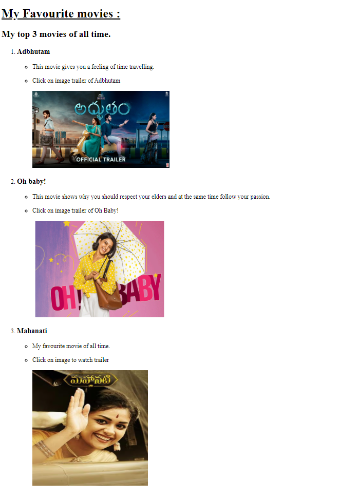
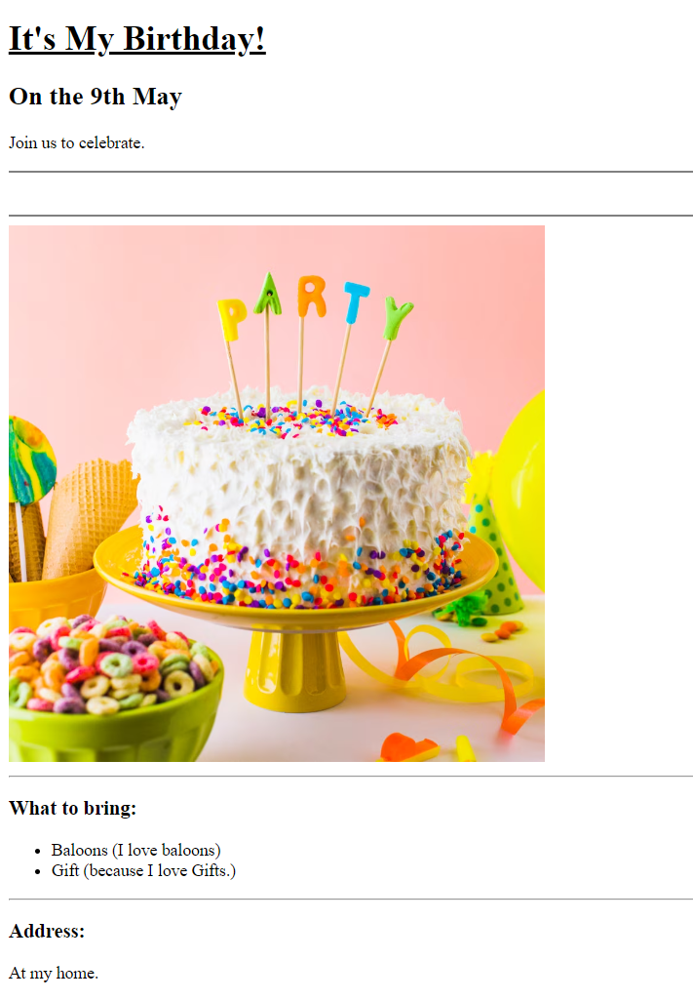
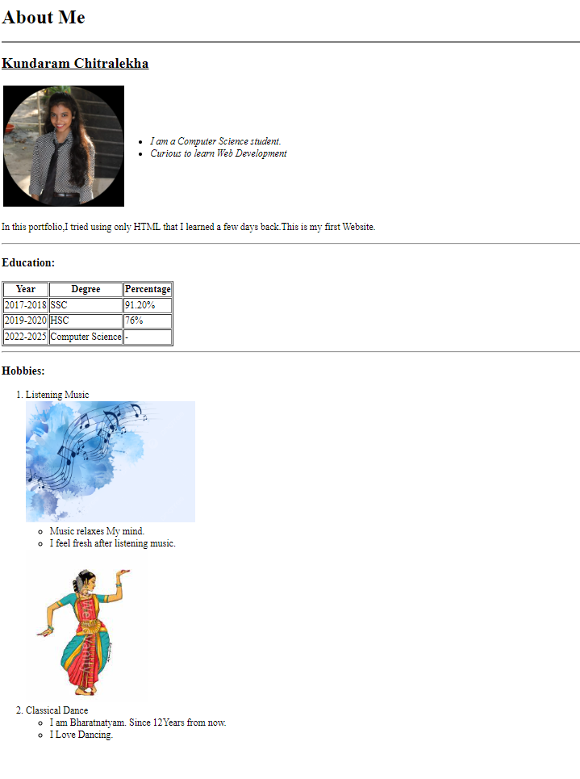

Chitralekha's Portfolio
I am a Web Developer learner.
It has been few days I started Learning HTML.
I made some basic projects just by using only HTML.
Here are some of them:
My favourite Movies- Project.

My Birthday Invitation-Project.

About Me-Project

Contact Me-Project